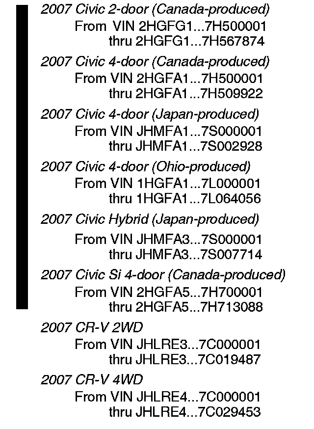

Body - Power Windows Inoperative
07-025June 10, 2008
Applies To:
See VEHICLES AFFECTED
Power Windows Do Not Work
(Supersedes 07-025, dated April 20, 2007, to update the information marked by the black bars and asterisks)
SYMPTOM
The power windows do not operate, and the No.30 fuse (20A) in the under-dash fuse/relay box is blown.

VEHICLES AFFECTED
PROBABLE CAUSE
The front passenger's power window switch is faulty.
CORRECTIVE ACTION
Replace the passenger's front power window switch, and replace the No. 30 fuse in the under-dash fuse/ relay box.
PARTS INFORMATION
Power Window Switch
Civic 2-door (Canada-produced),
Civic 4-door (Ohio-or Canada-produced, non-Si)
P/N 35760-SNA-A13, H/C 8477960
Civic 4-door (Japan-produced), Civic Hybrid,
Civic Si 4-door
P/N 35760-SNA-A14ZA, H/C 8507238
CR-V
P/N 35760-SWA-A01, H/C 8404428
WARRANTY CLAIM INFORMATION
In warranty:
The normal warranty applies.
Operation Number: 7441A3
*Flat Rate Time: 0.3 hour (Civic)
0.5 hour (CR-V)*
Failed Part: P/N 35760-SWA-A01
H/C 8404428
Defect Code: 03217
Symptom Code: 01201
Skill Level: Repair Technician
Out of warranty:
Any repair performed after warranty expiration may be eligible for goodwill consideration by the District Parts and Service Manager or your Zone Office. You must request consideration, and get a decision, before starting work.
REPAIR PROCEDURE
1. Remove the passenger's front door panel:
^ Refer to the Body section of the appropriate service manual, or
^ Online, enter keywords DOOR PANEL and select Front Door Panel Removal/Installation from the list.
2. Replace the passenger's front power window switch:
^ Refer to the Body section of the appropriate service manual, or
^ Online, enter keywords POWER WINDOW and select Power Window Switch Replacement or Power Window Switch Test/Replacement from the list.
3. Replace the No. 30 fuse (20A) in the under-dash fuse/relay box.

Disclaimer